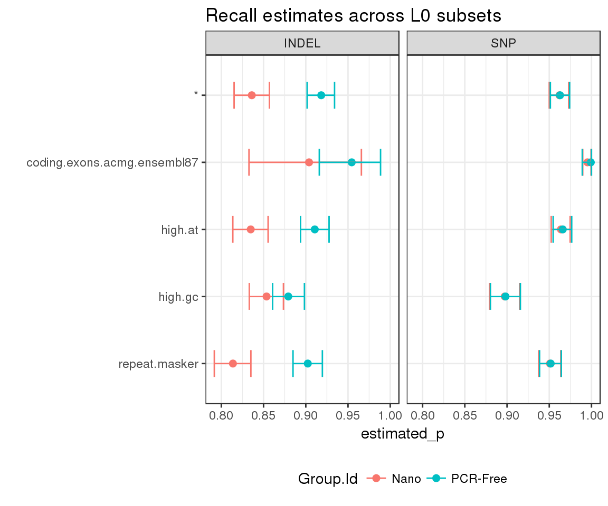

We will use a set of publicly available NovaSeq builds
In the present vignette we will be comparing stratified recall between a set of PCR-Free vs. Nano builds from NA12878. Starting from publicly available VCFs in BaseSpace Data Central, we can obtain stratified counts with hap.py as follows:
hap.py ${TRUTH_VCF} ${QUERY_VCF} -o ${OUTPUT_PREFIX} -f ${CONFIDENT_REGIONS} \
--threads 40 --write-counts --stratification filtered_beds/stratification_config.txt --reference ${REF} \
--roc QUAL --roc-filter LowQual --no-jsonThen load the output to R using happyCompare:
samplesheet_path <- system.file("extdata/samplesheets", "pcrfree_vs_nano.vignettes.csv", package = "happyCompare")
happy_compare <- read_samplesheet(samplesheet_path)We will eventually end up with a happy_compare object (a list), with 3 elements:
class(happy_compare)## [1] "happy_compare"sapply(happy_compare, class)## $samplesheet
## [1] "tbl_df" "tbl" "data.frame"
##
## $happy_results
## [1] "happy_result_list"
##
## $ids
## [1] "character"If we furhter inspect the contents of happy_results, we can see that each of its elements matches the data structure described in happyR, e.g.:
names(happy_compare$happy_results[[1]])## [1] "summary" "extended" "pr_curve"happy_compare objectsOnce we have a happy_compare object we can rely on the extract_metrics function to access our metrics of interest. Since hap.py saves stratified counts under *extended.csv files, we can use the following:
stratified_counts <- extract_metrics(happy_compare, table = "extended") %>%
filter(Subtype == "*", Filter == "PASS", Subset.Level == 0, !grepl(pattern = "TS*", Subset)) This will conveniently merge hap.py results with samplesheet metadata, making downstream analysis easier:
stratified_counts## # A tibble: 140 x 69
## Group.Id Sample.Id Replicate.Id
## <chr> <chr> <chr>
## 1 PCR-Free NA12878 NA12878-I30_S1
## 2 PCR-Free NA12878 NA12878-I30_S1
## 3 PCR-Free NA12878 NA12878-I30_S1
## 4 PCR-Free NA12878 NA12878-I30_S1
## 5 PCR-Free NA12878 NA12878-I30_S1
## 6 PCR-Free NA12878 NA12878-I30_S1
## 7 PCR-Free NA12878 NA12878-I30_S1
## 8 PCR-Free NA12878 NA12878-I30_S1
## 9 PCR-Free NA12878 NA12878-I30_S1
## 10 PCR-Free NA12878 NA12878-I30_S1
## # ... with 130 more rows, and 66 more variables: happy_prefix <chr>,
## # Type <chr>, Subtype <chr>, Subset <chr>, Filter <chr>, Genotype <chr>,
## # QQ.Field <chr>, QQ <chr>, METRIC.Recall <dbl>, METRIC.Precision <dbl>,
## # METRIC.Frac_NA <dbl>, METRIC.F1_Score <dbl>, FP.gt <int>, FP.al <int>,
## # Subset.Size <dbl>, Subset.IS_CONF.Size <dbl>, Subset.Level <dbl>,
## # TRUTH.TOTAL <int>, TRUTH.TOTAL.ti <dbl>, TRUTH.TOTAL.tv <dbl>,
## # TRUTH.TOTAL.het <dbl>, TRUTH.TOTAL.homalt <dbl>,
## # TRUTH.TOTAL.TiTv_ratio <dbl>, TRUTH.TOTAL.het_hom_ratio <dbl>,
## # TRUTH.TP <int>, TRUTH.TP.ti <dbl>, TRUTH.TP.tv <dbl>,
## # TRUTH.TP.het <dbl>, TRUTH.TP.homalt <dbl>, TRUTH.TP.TiTv_ratio <dbl>,
## # TRUTH.TP.het_hom_ratio <dbl>, TRUTH.FN <int>, TRUTH.FN.ti <dbl>,
## # TRUTH.FN.tv <dbl>, TRUTH.FN.het <dbl>, TRUTH.FN.homalt <dbl>,
## # TRUTH.FN.TiTv_ratio <dbl>, TRUTH.FN.het_hom_ratio <dbl>,
## # QUERY.TOTAL <int>, QUERY.TOTAL.ti <dbl>, QUERY.TOTAL.tv <dbl>,
## # QUERY.TOTAL.het <dbl>, QUERY.TOTAL.homalt <dbl>,
## # QUERY.TOTAL.TiTv_ratio <dbl>, QUERY.TOTAL.het_hom_ratio <dbl>,
## # QUERY.TP <int>, QUERY.TP.ti <dbl>, QUERY.TP.tv <dbl>,
## # QUERY.TP.het <dbl>, QUERY.TP.homalt <dbl>, QUERY.TP.TiTv_ratio <dbl>,
## # QUERY.TP.het_hom_ratio <dbl>, QUERY.FP <int>, QUERY.FP.ti <dbl>,
## # QUERY.FP.tv <dbl>, QUERY.FP.het <dbl>, QUERY.FP.homalt <dbl>,
## # QUERY.FP.TiTv_ratio <dbl>, QUERY.FP.het_hom_ratio <dbl>,
## # QUERY.UNK <int>, QUERY.UNK.ti <dbl>, QUERY.UNK.tv <dbl>,
## # QUERY.UNK.het <dbl>, QUERY.UNK.homalt <dbl>,
## # QUERY.UNK.TiTv_ratio <dbl>, QUERY.UNK.het_hom_ratio <dbl>Finally, we can estimate highest density intervals to account for uncertainty in the stratified counts:
hdi <- stratified_counts %>%
estimate_hdi(successes_col = "TRUTH.TP", totals_col = "TRUTH.TOTAL",
group_cols = c("Group.Id", "Subset", "Type"), aggregate_only = FALSE)And visualise the results using ggplot2:
hdi %>%
mutate(Subset = factor(Subset, levels = rev(unique(Subset)))) %>%
filter(replicate_id == ".aggregate") %>%
ggplot(aes(x = estimated_p, y = Subset, group = Subset)) +
geom_point(aes(color = Group.Id), size = 2) +
geom_errorbarh(aes(xmin = lower, xmax = upper, color = Group.Id), height = 0.4) +
facet_grid(. ~ Type) +
theme(legend.position = "bottom") +
ggtitle("Recall estimates across L0 subsets") +
ylab("")